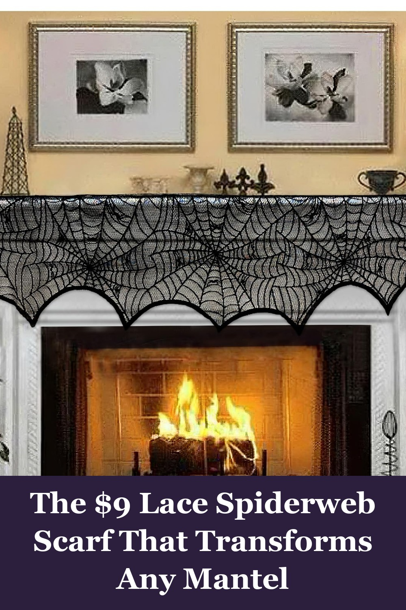
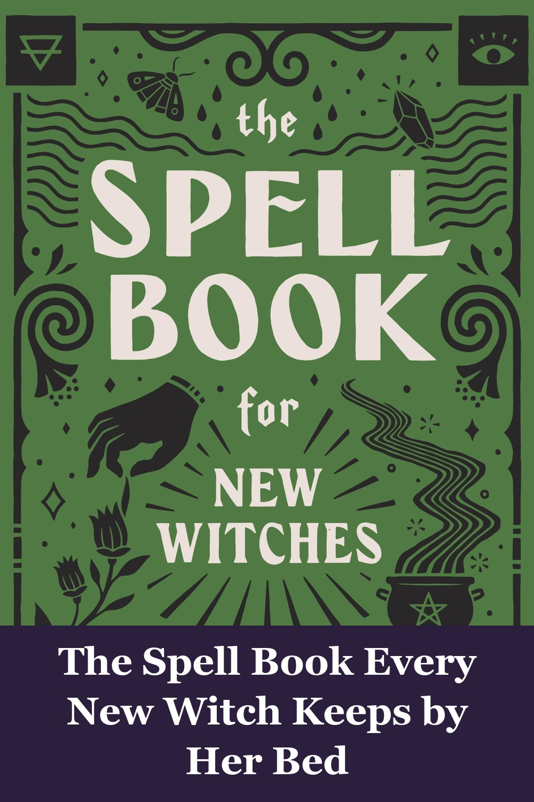
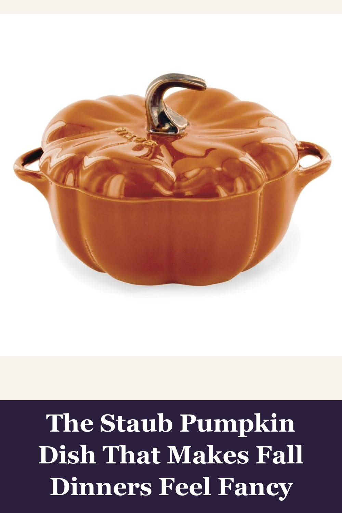

AerWo Halloween Decoration Black Lace Spiderweb Fireplace Mantle Scarf Cover, 18 x 96 inch
A one-piece black lace cobweb runner that drapes over a fireplace mantel, shelf, or table in seconds — the kind of small, elegant detail that makes a whole room feel like a haunted parlor without looking like a costume shop.
This is a lovely spider web scarf. I think it will make a nice runner for my Halloween display. The fabric is substantial and will hold up well to wear. I doubt it would snag easily.— verified Amazon buyer
View on Amazon →
The Spell Book for New Witches: Essential Spells to Change Your Life, by Ambrosia Hawthorn
130 beginner-friendly spells for love, prosperity, and healing, with clear step-by-step instructions and a cookbook-style layout — the book people who've never cast a spell in their life reach for first.
This book is beautifully put together and very beginner-friendly while still offering plenty of depth for someone who's been practicing a while. The layout is clear, and the spells are explained step by step with easy-to-find ingredients. I especially appreciated the sections that go into correspondences — herbs, crystals, and moon phases — which make the rituals feel more meaningful.— verified Amazon buyer
View on Amazon →
Staub Ceramic 16-oz Petite Pumpkin Cocotte - Burnt Orange
A French ceramic pumpkin-shaped cocotte that goes from oven to table — soup for one, a baked dip, or just a beautiful thing to leave out on the counter all autumn. The kind of small splurge that upgrades every fall dinner.
I purchased the petite Staub Cocotte mainly to use as autumn decor or as a candy dish. It is a very cute, high quality serving piece. This is my first Staub piece and I couldn't be happier with my purchase.— verified Amazon buyer
View on Amazon →